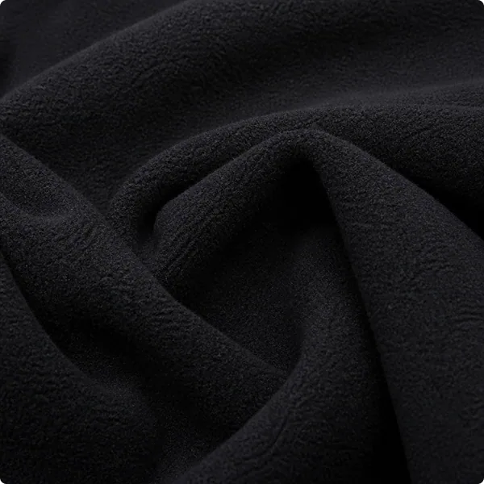

Performance & Sublimation Fabrics
Dry-fit polyester and sublimation-ready blends for activewear, sportswear, and your print garments. Available in 160-220 GSM.
From performance polyester to premium cotton blends, we source and work with fabrics built for the demands of modern apparel brands.

Every fabric we work with is selected for durability, printability, and finish quality, not just feel.
Dry-fit polyester and sublimation-ready blends for activewear, sportswear, and your print garments. Available in 160-220 GSM.
Cotton jersey, fleece, French terry, interlock knit, and twill, for t-shirts, hoodies, sweatshirts, loungewear, and outerwear.
Mesh, rib-knit cuffs, and performance textiles for athletic merchandising, special trims, and breathable lightweight use built for movement.
Supporting high-performance activewear, casual apparel, and production-specific trims. Click any material to view sizing, compositions, and sourcing specifications.